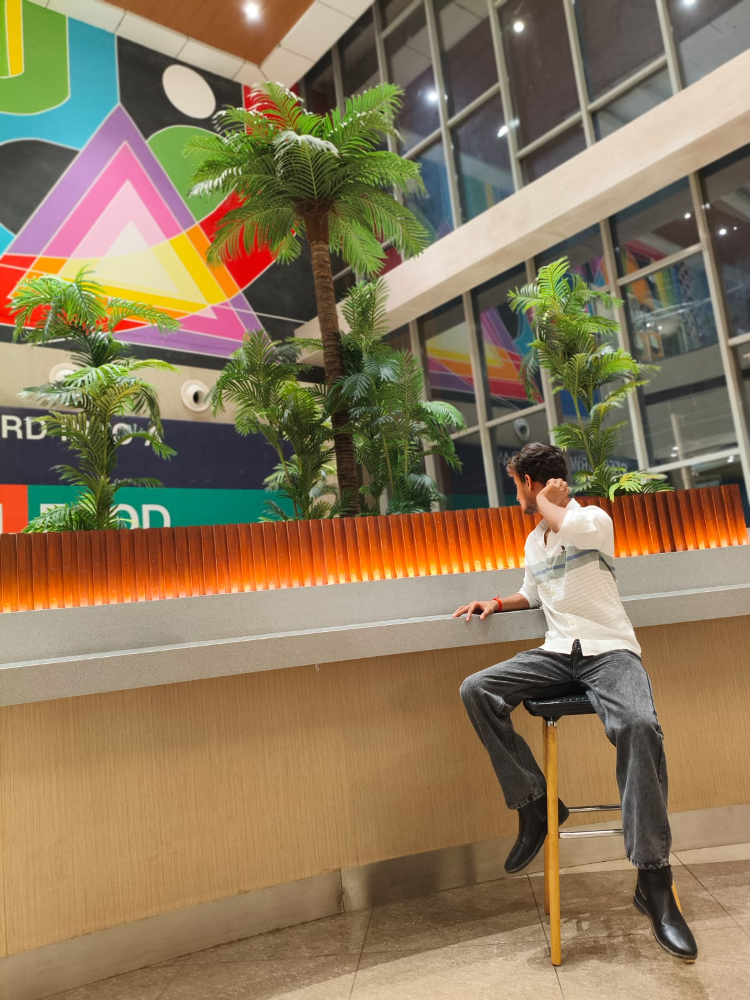

DEVELOPER · STUDENT · BUILDERBASED IN INDIA · THINKING BEYOND
Shivam Pandey.
I’m learning to build thoughtful digital experiences — blending code, curiosity, and a human perspective on technology.
EDUCATION
HUMAN CONNECTION

IN
PUBLIC ✳
Part thinker.
Part maker.
All in.
I’m Shivam — a student and developer who loves the space where thoughtful design meets useful technology. I’m early in my journey, but already hooked on making the internet feel a little more human.
From the first sketch to the last tiny interaction, I like understanding how things work and finding a more interesting way to build them.
Less talk.
More making.
One idea, made interactive.
A closer look at suspicious email.
MY FIRST FEATURED PROJECT · OPEN THE LIVE EXPERIENCE ↗
Learn it.
Try it.
Make it yours.
Tools are just the start. I’m interested in what you can do when you put them together.
A WORK IN PROGRESS, ON PURPOSE.
Still writing
the story.
Learning by building
Exploring frontend development, creative coding, and the details that make the web feel alive.
More things in the world
Adding real projects, collaborations, and milestones here as they happen.
Stay curious
Keep asking questions. Keep making things. Keep getting better.